Exam Like Questions: Module 10
Lecture 22
T/F
1) The diffraction limit of an instruments resolving capability does not depend upon wavelength.
Answer: False
For a telescope 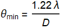
2) Glasses are coated with thin films so that enhanced interference patterns can be seen.
Answer: False
Coatings are used to reduce reflections so that more light is transmitted
Multiple Choice
1) Which electromagnetic waves are most suitable for investigating molecular atom spacing: a) radio, b) infra red, c) ultraviolet, or d) X-rays.
Answer: D
Rayleigh Criteria: 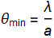
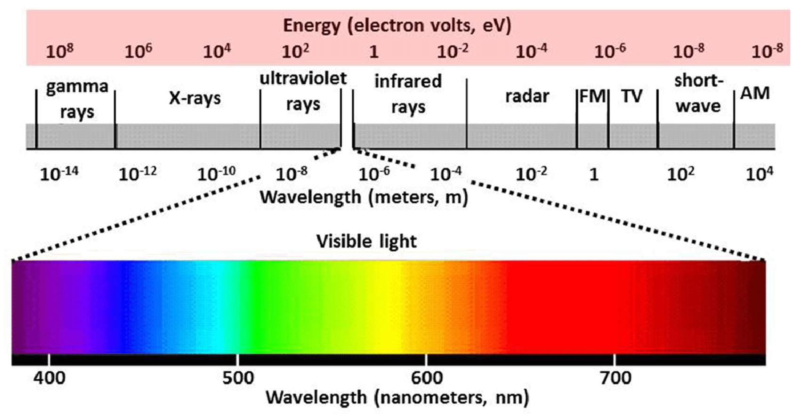
2) What is the minimum angular separation resolvable for star light at 630 nm through a 25 cm diameter telescope?
Answer: rad or °
For a telescope (equation gives answer in rad)
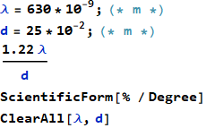
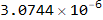
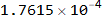
Useful Exercises
1) A beam of parallel rays from a 29-MHz Citizens Band radio transmitter passes between to electrically conducting (hence opaque to radio waves) buildings that are located 45 m apart. What is a) the wavelength of the radio waves? And b) the angular width of the beam when it emerges from between the buildings?
Answer: a) 10.4 m b) 0.46 rad or 26.6°
Wavelength: 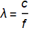
Double Slit: a Sin(θ)=m λ
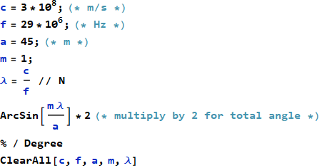
2) A double slit experiment has a slit spacing of 0.02 mm and each slit was a width of 0.002 mm. Between which order of the interference fringes does the diffraction first minimum lie?
Answer: 10
Single Slit: a 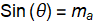 λ
Double Slit: d 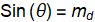 λ
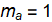 and 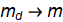
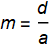
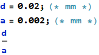
Lecture 23 and 24
T/F
1) Without General Relativity corrections the GPS position system would have error of kilometers.
Answer: True
The time corrections that general relativity provides to classical mechanics improves the precision of the system.
2) The twin paradox arises because one of the twins was in a reference frame that was not always inertial.
Answer: True
“In physics, the twin paradox is a thought experiment in special relativity involving identical twins, one of whom makes a journey into space in a high-speed rocket and returns home to find that the twin who remained on Earth has aged more.”
A non-inertial reference frame is a reference frame that is accelerating.
Multiple Choice
1) A 630 nm red light laser has a frequency of a) 4.76 x Hz, b) 0.476 PHz, c) 476 THz, or d) 1.59 x Hz.
Answer: A, B (peta-Hz ⧦ Hz), C (tera-Hz ⧦ Hz)
Frequency: 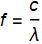
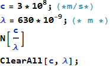
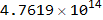
2) If the relative speed between two inertial reference frames is 2.89 x 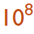 m/s and 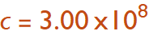 m/s then the relativistic gamma factor is a) 3.70, b) 3.71, c) 3.73, or d) 3.74.
Answer: C
Gamma Factor: 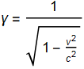
Remember γ≥1
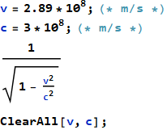
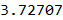
Useful Exercises
1) A one-way trip to Mars with really good rocket motors takes 100 Earth days. Assuming that the distance traveled corresponds to the shortest path between the Earths and Mars orbits. When you arrive at Mars how much younger are you than an equivalent person who stayed on Earth? (Hint ignore all acceleration phases of the mission)
Answer: Not moving fast enough, you are the same age
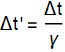
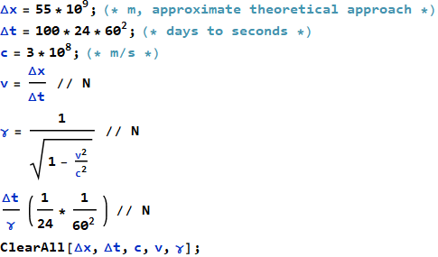
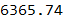
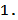
How fast would I need to go, we need γ≠1?
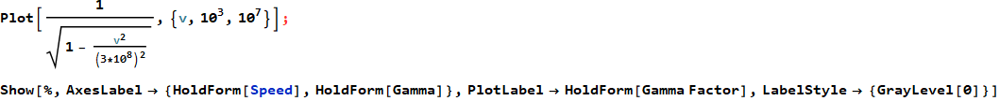
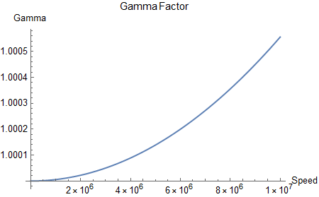
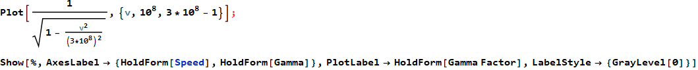
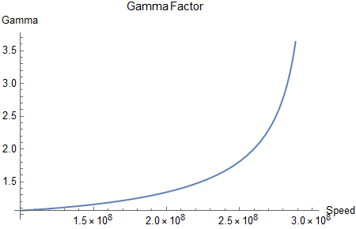
2) In a proton – proton high energy collision a particle is produced that is moving into a detector 3 m from the collision. If the particle is moving at 0.99992 c how long does it take to reach the detector in a) the laboratory reference frame, b) in the particles reference frame, and c) in the particles reference frame how far did it have to travel?
Answer: a) b) s c) 0.038 m
In the book and 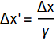
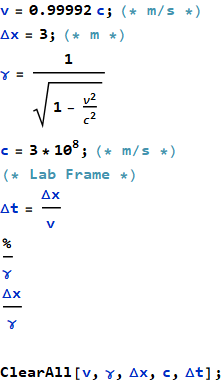
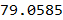
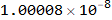
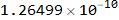
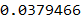